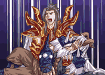

「序幕」

远古时代，黄帝为了得到传说中的「三皇玺」，而派出手下「极」组织的成员轩辕殷追查「三皇玺」世代的守护者--柏皇氏族。
这天，就在轩辕殷将要抓到柏皇氏族的龙儿与文叔并要将他们带走时，曾经同为「极」组织的成员，并且身为轩辕殷师傅的战千�愠鱿至恕Ｕ角��阕柚沽诵�辕殷，将龙儿与文叔救下。为了不为难昔日的弟子，战千�阋晕�牲自己的方式来让轩辕殷在黄帝面前有个交代。
 一千八百年后……
一千八百年后……
柏皇氏族新的「伏」、「娲」继承人歆儿、战廷羿和廷羿的弟弟战廷云三人一起在后山聊天。忽然间，廷羿很郑重的对廷云和歆儿说自己要离家出去修行，嘱托廷云保护好身为「娲」继承人的歆儿。
这天，歆儿来找廷云出去捉鱼，两人准备出家门的时候，母亲风翎告诉廷云村口结界有异常，他爹战铁霄已经前去查看了，叫两人早点回家。告别了母亲，两人前往村口的小溪。在村子里从村民口里听说，原来三皇玺蕴含着惊人的力量，长久以来，各方神魔，部落都希望能得到它，柏皇氏族守护的三皇玺之钥是寻得三皇玺的关键，而相传柏皇氏族是女娲的直系子孙，女娲升天之后，柏皇氏族奉命世代由祭司血统的人担任继承者，让身体成为三皇玺的容器，并指派守护者来保护继承者。
二人径直往南走去，在尽头往左走到柏皇村口。看到战铁霄正在查看村口结界的情况，战铁霄告诉廷云结界有异常，让他们不要去捉鱼了，另外，村中的祭司苍祀婆婆似乎正在找他，让他去婆婆那里一趟。
二人往回到东侧入口，进入木屋来到婆婆家。婆婆似乎占卜到不好的状况，让歆儿提前继承「娲」的力量，另外让廷云代替他哥哥廷羿，继承「伏」的力量。就在这时候，有村民跑来告诉婆婆，廷羿回来了。廷云和歆儿听到以后马上往村口跑去。
刚跑到门外，就听见从村口传来一阵轰隆的巨响。两人马上向村口跑去。
来到村口，却看到女娲石的碎片被打破，廷羿手中拿着一把黑色的剑，满脸杀气的站在村口，对廷云和歆儿的呼唤毫无反应。这时战铁霄、风翎和苍祀婆婆都赶到了，廷羿突然将爹砍伤，苍祀婆婆叫风翎赶紧带着歆儿和廷云去继承「娲」「伏」的力量。
风翎带着歆儿和廷云来到女娲石前，让两人将自己的鲜血滴在女娲石上，然后做法将力量继承在两人身上。这时有一队怪物追来，风翎为了保护两人，自己将怪物引开。两人逃至后山，发现吊桥还未修好，谁知道又有怪物追来，廷云为了保护歆儿被怪物打落山崖……
为了保护歆儿，廷云被打落深谷。接下来他们的命运又将如何？（第一章第一回结束）